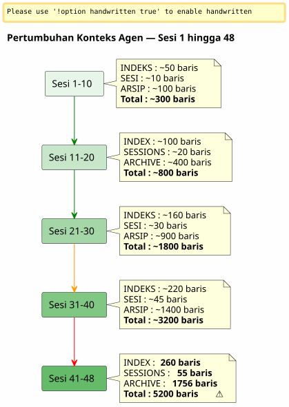

Sliding Window dan Gelombang Dingin: Saat Konteks Agen Meledak dan Perlu Mengarsipkan tanpa Kehilangan
Diterbitkan 26 April 2026
Ringkasan
Setelah 48 sesi pada satu proyek saja dan 150+ secara total, sistem tata kelola Eager/Lazy yang saya bangun dengan hati-hati mulai terasa terbeban. File agen, yang seharusnya ringan, berukuran 5200 baris secara kumulatif. Konteks yang dimuat otomatis meningkat lebih cepat daripada kemampuan saya mengendalikannya. Artikel ini menceritakan bagaimana saya merancang mekanisme cadangan — antara sliding window dan gelombang dingin yang sama — untuk menjaga konteks aktif tetap ringan tanpa pernah kehilangan apa pun.
Sinyal: 5200 Baris
Saya sedang dalam sesi 048 tentang`magic-stick`, proyek saya untuk membangun ISO Linux live. Opencode menatap saya. Seperti biasa, dia secara otomatis telah memuat file-file Eager saya di awal sesi —AGENT.adoc, PROMPT_REPRISE.adoc, .agents/INDEX.adoc. Tidak ada yang anormal.
Kecuali ada sesuatu yang tidak beres. Jawaban lebih lambat. Penalaran lebih encer. Agen melupakan detail yang sebelumnya masih terlihat dua pesan yang lalu.
Saya membuka sebuah terminal dan mengetik :
wc -l .agents/INDEX.adoc .agents/SESSIONS_HISTORY.adoc \
.agents/archives/COMPLETED_TASKS_ARCHIVE_2026-04.adoc260 baris untuk INDEX. 55 untuk SESSIONS_HISTORY.1756 untuk COMPLETED_TASKS_ARCHIVE.
Berkas`sessions/`menambahkan lagi sekitar 3200 baris. Total :5200 bariskonteks yang dimuat, dengan satu cara atau lainnya, dalam otak sementara agen.
Strategi Eager/Lazy yang saya teoretisasikan dalam artikel sebelumnya berfungsi — tetapi ia memiliki cacat lahir yang saya tidak duga: ia tidak memilikitidak ada mekanisme penuaan. Setiap sesion menambahkan satu baris ke INDEX, satu paragraphe ke COMPLETED_TASKS, satu file di sessions/. Tidak ada yang keluar. Konteks adalah sebuah bola salju yang membesar setiap sesi baru.

Ini bukan bug, ini adalah konsekuensi langsung dari prosedur akhir sesi yang dengan teliti mengarsipkan setiap detail. Sistem tersebut menjadi korban keberhasilannya sendiri.
Diagnosa: Redundansi tiga
Saya meminta agen untuk mendiagnosa masalah. Jawabannya langsung dan tepat.
File |
Baris |
Peran |
Masalah |
|
260+ |
EAGER (dimuat otomatis) |
Tabel semua sesi sejak 001 —+1 baris per sesi |
|
55 |
EAGER |
Tabel ringkasan —redundansi dengan INDEX |
|
1756 |
EAGER (implisit) |
detail lengkap semua sesi April |
|
~5200 total |
LAZY (dianggap) |
Arsip individu, tetapitidak digunakankarena semua sudah ada di COMPLETED_TASKS |
Agen mengidentifikasi empat akar penyebab :
-
COMPLETED_TASKS_ARCHIVE menyerap semua— alih-alih menunjuk ke arsip`.sessions/`, Dia menyalin seluruhnya setiap sesi.
-
INDEX.adoc berfungsi sebagai sejarah lengkap— Tabel "Sessions Récentes" berisi 30+ entri.
-
SESSIONS_HISTORY.adoc redundan— Info sama seperti INDEX, format berbeda.
-
Aturan LAZY tidak dipatuhi— COMPLETED_TASKS secara implisit EAGER karena ia berisi semuanya.
Usulannya radikal: membatasi INDEX menjadi 10 sesi, mengosongkan COMPLETED_TASKS, memindahkan SESSIONS_HISTORY menjadi LAZY murni. Manfaat segera :~1900 baris yang dihemat.
Ini bersih, efisien, dan logis. Tapi saya memiliki masalah dengan pendekatan ini.
Mengapa saya menolak solusi yang jelas
Solusi agen tersebut adalah solusi seorang insinyur yang mengoptimalkan cache. Membatasi. Memotong. Menghapus redundansi.
Tapi "kelebihan" ini bukanlah. Setiap file tata kelola menangkap satusudut berbedapada kenyataan yang sama:
-
INDEX= tampilan makro, dashboard eksekutif
-
Riwayat sesi= tabel kronologis linear, diberi skor
-
COMPLETED_TASKS_ARCHIVE= narasi rinci dengan metrik
-
sessions/*.adoc` = arsip individu, konteks lengkap
Bukan duplikasi bodoh. Ini adalah dariperspektif berganda terstruktur. Ini persis yang diperlukan untuk mendistilasi — agar nanti seorang manusia (atau LLM masa depan yang lebih terlatih) bisa menyilangkan sudut dan mengekstrak pola.
Bayangkan seorang data scientist yang berkata kepadamu: « Mari kita hapus 3 dari 6 kolom, mereka terkorelasi. » Apa yang kamu jawab? bahwa korelasi bukanlah redundansi ketika setiap kolom menangkap dimensi yang berbeda dari fenomena yang sama. bahwa itu tepatnya kekayaan dimensi yang membuat dataset dapat digunakan.
Ini intuisi saya. Dan saya membela intuisi saya terhadap rasionalitas dingin agen.
_ Saya tidak melihat tempat menyimpan semua yang diam dalam ide saya. Kita tidak hanya menumpuk semuanya, kita memindahkan hasil terstruktur dari prosedur akhir sesi — setiap file dengan sudutnya, redundansi yang sebenarnya adalah peningkatan. Inilah bahan multidimensi yang akan lebih baik untuk distilasi. _
Agent menyalahkan pukulan. Dan memperbaiki diri.
Proposisi: Ombak Dingin Identik
Agent lalu menawarkan sebuah mekanisme yang lebih halus, yang menghargai intuisi saya tentang dataset kaya sekaligus menyelesaikan masalah teknis konteks yang meledak.
Prinsipnya sederhana dan langsung terinspirasi dari polaPenyimpanan Panas/Hangat/Dinginditerapkan pada pengelolaan arsip :
-
Panas (GIAT)= 10 sesi terakhir dalam INDEX, PROMPT_REPRISE dari sesi N+1, 2 file sesi terakhir
-
Hangat (LAZY)= SESSIONS_HISTORY terbaru, SCRIPT_VERIFICATION, seluruh dokumentasi referensi
-
Dingin (backup/)= semuanya yang lain, tergeserutuh, tanpa transformasi, tanpa reindeksasi
----
----
----
.agents/
├── INDEX.adoc → Sessions N-9 à N (10 dernières)
├── SESSIONS_HISTORY.adoc → Sessions N-9 à N
├── SCRIPT_VERIFICATION.adoc → Dernière vérif (pas d'historique)
├── PROMPT_REPRISE.adoc → Session N+1 uniquement
├── sessions/ → Sessions N-1 à N uniquement
└── backup/
└── Y2026-sessions-001-039/ ← Vague froide, COPIE INTÉGRALE
├── INDEX.adoc → Sessions 001 à 039 (complet)
├── SESSIONS_HISTORY.adoc → Sessions 001 à 039 (complet)
├── COMPLETED_TASKS_ARCHIVE.adoc → Sessions 001 à 039 (complet)
└── sessions/ → 001.adoc, 002.adoc...
----
Kunci dari mekanisme :**cadangan bukan merupakan indeks pusat, ini adalah salinan tepat dari gelombang yang lalu**. Melebihi batas 10 sesi aktif, tidak ada yang dihapus. Tidak ada yang di-reindex. Tidak ada yang digabung. Kami mengambil paket file agen seperti sesi N-10, dan memindahkannya ke`backup/`.
File-file aktif, mereka, terpotong:
* INDEX : hanya 10 baris terakhir (sliding window)
* SESSIONS_HISTORY : sama
* COMPLETED_TASKS_ARCHIVE : file baru untuk periode saat ini
* sessions/: hanya 2 sesi terakhir
[plantuml, format=svg, id=diag-hot-warm-cold, alt="Architecture Hot/Warm/Cold du contexte agent — EAGER/LAZY/backup"]
----
@startuml
skinparam backgroundColor #FEFEFE
skinparam defaultTextAlignment center
skinparam wrapWidth 200
title Arsitektur Hot / Warm / Cold dari Konteks Agent
package "HOT (EAGER)\nDimuat otomatis\n~300 baris" as HOT #FFCDD2 {
file "INDEX.adoc\n(10 sesi)" as IDX_HOT
file "PROMPT_REPRISE\n(sesi N+1)" as PRO_HOT
file "AGENT.adoc\n(aturan mutlak)" as AG_HOT
}
package "WARM (LAZY)\nDimuat saat diminta\n~500 baris" as WARM #FFF9C4 {
file "SESSIONS_HISTORY\n(10 terakhir)" as HIS_WARM
file "SCRIPT_VERIFICATION\n(terakhir)" as VER_WARM
file "PROCEDURES.adoc\n(templates)" as PRO_WARM
file "*_REFERENCE.adoc\n(dokumen teknis)" as REF_WARM
}
package "COLD (backup/)\nTidak pernah diisi\nHanya bacaan manusia" as COLD #BBDEFB {
folder "Y2026-001-039/" as WAVE {
file "INDEX (lengkap)" as IDX_COLD
file "SESSIONS_HISTORY\n(lengkap)" as HIS_COLD
file "COMPLETED_TASKS\n(selesai)" as ARCH_COLD
folder "sesi/ (001-039)" as SESS_COLD
}
folder "Y2026-040-???\n(future)" as FUTURE
}
HOT --> WARM : "Agent naik\njika diperlukan"
WARM --> COLD : "Tidak pernah otomatis\nManusia pergi ke sana sendiri"
note bottom of COLD
Règle : COPIE INTÉGRALE
Pas de transformation
Pas de réindexation
Read-only après archivage
end note
@enduml
----
Keuntungan langsung sangat besar : konteks EAGER beralih dari**~5200 baris hingga ~300 baris**. Pembagian dengan 17. Tanpa kehilangan satu baris pun dari data historis.
== Mengapa ini bukan tempat untuk segalanya
Agen, dalam iterasi pertamanya, khawatir bahwa`backup/`menjadi sebuah kotak hitam — sebuah folder tempat menaruh file yang tidak akan pernah dibaca lagi. Ini adalah rasa takut yang sah. Namun itu berbasis pada sebuah kebingungan.
Sebuah tempat menyimpan segala-galanya, itu ketika seseorang melempar berkas.**tanpa struktur, tanpa konvensi, tanpa logika pengelompokan**. Di sini, backup terstruktur berdasarkan periode (Y2026-001-039), dan setiap folder backup berisi**struktur yang sama**bahwa dokumen`.agents/`aktif : INDEX, SESSIONS_HISTORY, COMPLETED_TASKS_ARCHIVE, sessions/.
Bukan ini sebuah tempat untuk menyimpan segala-galanya. Ini adalah**snapshot dengan stempel waktu**. Bahkan bisa dikatakan bahwa ini adalah mekanisme versioning yang disederhanakan — kecuali bahwa ia tidak melakukan versioning pada file secara individual, tetapi pada paket lengkap dari tata kelola pada suatu saat T.
Saat Anda ingin menemukan informasi lama, Anda tidak memerlukan indeks sentral. Anda memiliki dua pilihan:
1. **grep` ditargetkan**:`grep -r "zsh" backup/Y2026-001-039/`— dan Anda menemukan semua yang menyebutkan zsh dalam periode tersebut, tidak peduli sudutnya (INDEX, SESSIONS_HISTORY, arsip sesi).
2. **Reintegrasi manual**: Anda menyalin sementara folder backup ke konteks aktif, dan Anda meminta agen untuk menganalisis periode tertentu ini.
Indeksnya bersifat implisit. Dia berada dalam struktur file itu sendiri — masing-masing file sudah menjadi indeks dari sudut pandangnya masing-masing.
== Metafora dari rak-rak
Agar mekanisme tersebut intuitif, saya mengonsepsikan menjadi tiga rak:
* **Rak 1 (EAGER)**— rencana kerja. Yang saya butuh *sekarang*. INDEX terbaru, PROMPT_REPRISE, aturan mutlak. Ringan, segera, kritis.
* **Rak 2 (LAZY)**— perpustakaan konsultasi. Yang bisa saya ambil berdasarkan permintaan. Referensi teknis, riwayat terkini, prosedur. Lebih besar, tetapi tidak dimuat ke memori.
* **Gua (cadangan/)**— arsip dingin. Semua yang sudah lalu tetapi saya tidak ingin membuangnya. Agen tidak pernah masuk ke sana. Manusia turun ke sana ketika ia ingin mendistil.
Agent menawarkan awalnya sebuah rak keempat — satu`index-backup.adoc`yang akan LAZY dan berisi daftar isi seluruh backup. Saya menolak. Ini akan menjadi redundansi tambahan dalam sistem yang sudah menderita dari pertumbuhan linear. Struktur file-file yang terarsip sudah menjadi sebuah indeks.
== Sensor dengan dua pemicu
Konseptualisasinya kuat, tapi masih ada titik buta:**kapan tepat memicu rotasi?**Artikel awal mengidentifikasinya sebagai pertanyaan terbuka. Dua hari kemudian, jawaban tersebut dikodifikasi dalam file-file governansi dari enam proyek: sebuah sensor dengan dua trigger.
=== Pemicu Otomatis — `N % 10 == 0
Pemicu pertama bersifat matematika. Ketika nomor sesi adalah kelipatan 10 — sesi 10, 20, 30, 40 — rotasi backup dieksekusi secara otomatis dalam prosedur akhir sesi, tepat setelah langkah 6.
Mengapa 10? Ini adalah kompromi antara dua gaya yang berlawanan: jendela yang terlalu pendek (5 sesi) kehilangan konteks yang diperlukan untuk keberlanjutan; jendela yang terlalu panjang (20 sesi) tidak menyelesaikan masalah konteks berlebihan. Sepuluh sesi, dengan ritmo satu hingga dua sesi per hari, mencakup sekitar satu minggu kerja — cukup agar agen mengingat keputusan terbaru, namun tidak cukup untuk meledaknya konteks.
=== Pemicu Ambang — 500 Baris EAGER
Pemicu kedua bersifat dinamis. Terlepas dari nomor sesi, jika file-file EAGER yang terakumulasi melebihi**500 baris**, rotasi terpicu.
Ambang batas ini melindungi dari skenario di mana sesi-sesi sangat produktif — banyak konten yang ditulis dalam sedikit sesi. Sesi yang menghasilkan 120 baris konten redaksi memperbesar `COMPLETED_TASKS_ARCHIVE` jauh lebih cepat dibandingkan sesi debug yang memperbaiki dua baris. Ambang batas 500 baris, yang diukur melalui`wc -l .agents/INDEX.adoc .agents/archives/COMPLETED_TASKS_ARCHIVE_*.adoc PROMPT_REPRISE.adoc`, menangkup ketidaksimetrian ini.
=== Pemicu Manual — "cadangan rotasi
Akhirnya, manusia tetap menguasai. Kata kunci`rotation backup`, `backup rotation` ou `lance la rotation backup`memicu prosedur atas permintaan, terlepas dari akhir sesi. Bermanfaat ketika kita merasa konteks menjadi berat tetapi kita belum sampai kelipatan 10, atau ketika kita ingin mengarsipkan fase kerja sebelum memulai yang baru.
[plantuml, format=svg, id=diag-capteur-trigger, alt="Les trois déclencheurs du capteur de rotation backup — automatique, seuil, manuel"]
----
@startuml
skinparam backgroundColor #FEFEFE
skinparam defaultTextAlignment center
skinparam wrapWidth 200
title Sensor Cadangan Rotasi — Tiga Pemicu
start
:Procédure de fin de session;
note right: Mots-clés "akhir sesi"\nou "Kita berhenti di sini"
:Étapes 1 à 6\n(archivage standard);
note right
1. Archive sessions/N.adoc
2. MAJ PROMPT_REPRISE
3. MAJ SESSIONS_HISTORY
4. MAJ INDEX.adoc
5. MAJ TEST_COVERAGE
6. MAJ COMPLETED_TASKS
end note
if (N % 10 == 0\nOU\nEAGER cumulé > 500 lignes ?) then (oui)
:⚙️ Rotation Backup\n(étape 7);
note right
1. Créer backup/Y20XX-sessions-X-Y/
2. Copier intégrale INDEX + HISTORY
+ COMPLETED_TASKS + sessions/
3. Tronquer actifs à 10 sessions
4. Ajouter _Localisation active_
end note
else (non)
:Pas de rotation;
endif
:Checklist [✅] x 7\n(si applicable);
stop
@enduml
----
Diagram ini menunjukkan pemasangan sensor yang tepat dalam prosedur akhir sesi. Langkah 7 bersifat opsional — ia hanya dieksekusi jika salah satu dari dua kondisi terpenuhi — tetapi ia secara sistematis *terverifikasi*. Checklist akhir mencakup`[✅] 7. Backup roté (si applicable)`.
=== lingkaran tertutup
Sensor ini menutup loop yang dibuka oleh artikel sebelumnya. Governance Eager/Lazy telah menyelesaikan masalah memori agen antara dua sesi. Mekanisme Hot/Warm/Cold telah menyelesaikan masalah memori yang bertambah. Sensor dengan dua pemicu menyelesaikan masalah *kapan* — menghilangkan beban mental manusia untuk memantau ukuran konteks.
[plantuml, format=svg, id=diag-boucle-fermee, alt="Les trois couches de la gouvernance agent — Eager/Lazy, Hot/Warm/Cold, Capteur"]
----
@startuml
skinparam backgroundColor #FEFEFE
skinparam defaultTextAlignment center
title Tiga Lapisan Tata Kelola Agen
left to right direction
package "Lapisan 1 — Memori\n(Pasal 0108)" as C1 #E8F5E9 {
rectangle "**EAGER**\nDashboard\nDimuat otomatis" as EAG
rectangle "**LAZY**\nManual pemilik\nDimuat saat diperlukan" as LAZ
EAG -[hidden]right-> LAZ
}
package "Lapisan 2 — Penuaan\n(Artikel 0110)" as C2 #FFF9C4 {
rectangle "**HOT**\n10 sesi aktif\n~300 baris" as HOT
rectangle "**WARM**\nReferensi\nProsedur" as WRM
rectangle "**COLD**\nbackup/\ngelombang dingin" as CLD
HOT -[hidden]right-> WRM
WRM -[hidden]right-> CLD
}
package "Lapisan 3 — Pemicu\n(Hari ini)" as C3 #BBDEFB {
rectangle "**Otomatis**\nN % 10 == 0" as AUTO
rectangle "**Ambang**\n> 500 baris" as SEUIL
rectangle "**Manual**\ncadangan rotasi" as MAN
AUTO -[hidden]right-> SEUIL
SEUIL -[hidden]right-> MAN
}
C1 --> C2 : "Memori tumbuh\n→ diperlukan mekanisme\npenuaan"
C2 --> C3 : "Penuaan\n→ perlu sebuah pemicu\nuntuk mengeksekusinya"
note bottom of C3
✅ Déployé sur 6 projets
magic-stick · bakery-gradle
plantuml-gradle · cheroliv.com
jhipster-gradle-plugins
quizz-benchmark-gradle
end note
@enduml
----
Tiga lapisan tersebut menumpuk secara logis. Lapisan pertama memberikan memori kepada agen. Lapisan kedua mencegah memori tersebut menghabisi agen. Lapisan ketiga mengotomatisasi pemeliharaan memori tersebut agar manusia tidak perlu memikirkannya.
=== Migrasi Efektif di cheroliv.com
Mekanisme itu tidak tetap teoretis. Pada`cheroliv.com`, rotasi backup pertama telah dieksekusi pada 29 april 2026 — sesi -6 hingga 2 telah bermigrasi ke`.agents/backup/Y2026-sessions-neg6-a-002/`:
|===
|Berkas |Sebelum rotasi |Setelah rotasi |keuntungan |`.agents/INDEX.adoc` |19 sesi tercantum |10 sesi (3-12) |-9 entri |`.agents/SESSIONS_HISTORY.adoc` |18 sesi |10 sesi |-8 entri |`COMPLETED_TASKS_ARCHIVE` |161 baris (sesi 1-12) |135 baris (sesi 3-12) |-26 baris |`sessions/` |20 file |10 file |-10 file |**cadangan/** |tidak ada |1 gelombang dingin (10 sesi yang diarsipkan) |+1 paket dingin
|===
Peningkatan dalam jumlah baris modest — proyek ini masih muda, 12 sesi — namun yang penting adalah bahwa**mekanisme telah ditempatkan**. Rotasi otomatis berikutnya akan dipicu pada sesi 20, atau lebih awal jika 500 baris EAGER tercapai.
== Pelajaran Manusia-Agen
Sesi 048 ini mengajarkan saya sesuatu yang fundamental tentang kolaborasi dengan agen AI.
Agen memiliki bias alami: dia mencari untuk**mengoptimalkan**, à **menyederhanakan**, à **menghilangkan redundansi**. Ini adalah bias dari sistem yang dilatih untuk menghasilkan respons yang rapi dan ringkas. Di hadapan dataset yang kaya dan multidimensi, refleks pertamanya adalah menguranginya menjadi bentuk paling sederhana.
Manusia, dia, memiliki intuisi yang berbeda: dia merasakan bahwa redundansi terstruktur adalah sebuah**kelebihan**, bukan kesalahan. Bahwa keragaman sudut pandang atas satu realitas itu adalah apa yang secara tepat akan memungkinkan, kemudian, penyaringan kualitas.
Bukan karena agen salah. Yang dimaksud adalah bahwa "optimum" -nya bukan milik saya. Agen mengoptimalkan untuk**hadir**— konteks segera, jawaban cepat atas pertanyaan yang diajukan. Manusia mengoptimalkan untuk**masa depan**— kemampuan untuk menemukan, menyilangkan, mengdistil dalam tiga bulan atau tiga tahun.
____ Yang saya inginkan adalah bahan mentah. Pikiranmu, ragu-ragumu, jawabanmu atas pertanyaan-pertanyaan saya. Bukan sintesismu. Saya tahu cara membuat sintesis lebih baik daripadamu. Saya ingin bahan mentah. ____
Kalimat yang saya katakan padanya di akhir sesi ini merangkum semuanya. Agent adalah alat produksi. Manusia adalah alat distilasi. Tata kelola tidak dibuat agar agen memahami semuanya sendiri — ia dibuat agar manusia bisa, nanti, mengolah bahan yang diproduksi.
Gelombang dingin identik adalah terjemahan arsitektur dari filosofi ini: kita tidak membuang apa-apa, kita tidak menggabungkan apa-apa, kita tidak mengindeks ulang apa-apa. Kita memindahkan paket utuh. Distilasi akan datang nanti, secara manual, oleh manusia.
== Lanjutan Logis dari Artikel Sebelumnya
Jika Anda telah membacalink:/blog/2026/0108_gouvernance_agent_opencode_eager_lazy_post.html[artikel tentang strategi Eager/Lazy], Anda akan mengenal progresi alami :
1. **Pasal 0108**— Tata kelola Eager/Lazy : *comment* menyusun konteks agent pada dua tingkat ketersediaan
2. **Artikel 0110**— Mekanisme cadangan: *bagaimana* membuat konteks ini tua tanpa kehilangan ketika ia terlalu besar
Artikel pertama menjawab pertanyaan: « Agen tidak mengingat apa-apa di antara dua sesi, bagaimana memberi agen memori?
Dia menjawab pertanyaan yang timbul secara tak terelakkan dari yang pertama : « Memori bertambah setiap sesi, bagaimana mencegahnya melumuri agen tanpa menghapusnya ?
Jawabannya hanya berisi satu pola:**Panas/Hangat/Dingin**, diterapkan pada file tata kelola. Dan sebagai satu prinsip:**tidak tidak kehilangan apa-apa, selalu memindahkan kembali semuanya**.
== Tautan
* Artikel sebelumnya :link:/blog/2026/0108_gouvernance_agent_opencode_eager_lazy_post.html[Mengatur Agen AI dengan AsciiDoc]
* Situs saya : https://cheroliv.com
* Proyek`magic-stick`: https://github.com/cheroliv/magic-stick
---
*Sistem tata kelola yang baik tidak pernah menghapus data. Ia mengelola data.*
----
----
Kunci dari mekanismenya:**backup bukanlah indeks pusat, melainkan salinan identik dari gelombang sebelumnya**. Ketika kita melampaui cakrawala 10 sesi aktif, kita tidak menghapus apa pun. Kita tidak mengindeks ulang apa pun. Kita tidak menggabungkan apa pun. Kita mengambil paket file agen sebagaimana adanya pada sesi N-10, dan kita memindahkannya ke dalam`backup/`Mohon berikan teks yang ingin diterjemahkan.
Sementara itu, berkas-berkas aktif dipotong:
* INDEX : hanya 10 baris terakhir (sliding window)
* SESSIONS_HISTORY : sama
* COMPLETED_TASKS_ARCHIVE : berkas baru untuk periode saat ini
* sessions/ : hanya 2 sesi terakhir
[plantuml, format=svg, id=diag-hot-warm-cold, alt="Architecture Hot/Warm/Cold du contexte agent — EAGER/LAZY/backup"]
----
@startuml
skinparam backgroundColor #FEFEFE
skinparam defaultTextAlignment center
skinparam wrapWidth 200
title Arsitektur Hot / Warm / Cold dari Konteks Agen
package "HOT (EAGER)\nDimuat otomatis\n~300 baris" as HOT #FFCDD2 {
file "INDEX.adoc\n(10 sesi)" as IDX_HOT
file "PROMPT_REPRISE\n(sesi N+1)" as PRO_HOT
file "AGENT.adoc\n(aturan absolut)" as AG_HOT
}
package "WARM (LAZY)\nDimuat sesuai permintaan\n~500 baris" as WARM #FFF9C4 {
file "SESSIONS_HISTORY\n(10 terakhir)" as HIS_WARM
file "SCRIPT_VERIFICATION\n(terakhir)" as VER_WARM
file "PROCEDURES.adoc\n(templat)" as PRO_WARM
file "*_REFERENCE.adoc\n(dok teknis)" as REF_WARM
}
package "COLD (backup/)\nTidak pernah dimuat\nHanya pembacaan manusia" as COLD #BBDEFB {
folder "Y2026-001-039/" as WAVE {
file "INDEX (lengkap)" as IDX_COLD
file "SESSIONS_HISTORY\n(lengkap)" as HIS_COLD
file "COMPLETED_TASKS\n(lengkap)" as ARCH_COLD
folder "sessions/ (001-039)" as SESS_COLD
}
folder "Y2026-040-???\n(masa depan)" as FUTURE
}
HOT --> WARM : "Agen mengakses\njika perlu"
WARM --> COLD : "Tidak pernah otomatis\nManusia mengakses sendiri"
note bottom of COLD
Aturan: SALINAN UTUH
Tanpa transformasi
Tanpa indeks ulang
Read-only setelah pengarsipan
end note
@enduml
----
Keuntungan instan yang didapat sangat besar: konteks EAGER berubah dari**~5200 baris menjadi ~300 baris**Pembagian dengan 17. Tanpa kehilangan satu baris pun data historis.
== Mengapa Ini Bukan Tempat Penampungan Segala Hal
Agen tersebut, dalam iterasi pertamanya, khawatir bahwa`backup/`menjadi kotak hitam — sebuah folder tempat kita membuang berkas-berkas yang tidak akan pernah dibaca lagi. Ini adalah ketakutan yang wajar. Namun, hal itu didasari oleh sebuah kekeliruan.
Sebuah folder campuran adalah ketika kita memasukkan file-file**tanpa struktur, tanpa konvensi, tanpa logika pengelompokan**. Di sini, backup disusun berdasarkan periode (Y2026-001-039), dan setiap folder backup berisi**struktur yang sama**bahwa berkas`.agents/`aktif : INDEX, SESSIONS_HISTORY, COMPLETED_TASKS_ARCHIVE, sessions/.
Ini bukan tempat sampah. Ini adalah sebuah**snapshot berstempel waktu**Bahkan bisa dikatakan bahwa ini adalah mekanisme versioning yang disederhanakan — dengan catatan bahwa ini tidak melakukan versioning pada file secara individual, melainkan pada seluruh paket tata kelola pada momen T.
Ketika Anda ingin menemukan kembali informasi lama, Anda tidak memerlukan indeks pusat. Anda memiliki dua opsi:
1. **grep` tertarget**Silakan masukkan teks yang ingin Anda terjemahkan.`grep -r "zsh" backup/Y2026-001-039/`— dan Anda akan menemukan semua yang menyebutkan `zsh` dalam periode tersebut, apa pun sudut pandangnya (`INDEX`, `SESSIONS_HISTORY`, arsip sesi).
2. **Pengintegrasian ulang secara manual**: Anda menyalin folder backup untuk sementara ke dalam konteks aktif, dan Anda meminta agen untuk menganalisis periode spesifik tersebut.
Indeks tersebut bersifat implisit. Ia berada dalam struktur file itu sendiri — masing-masing sudah menjadi indeks dari sudut pandangnya sendiri.
== Metafora Rak Buku
Agar mekanismenya intuitif, saya mengonsepkannya dalam tiga rak:
* **Rak 1 (EAGER)**— rencana kerja. Apa yang saya butuhkan *sekarang*. INDEX terbaru, PROMPT_REPRISE, aturan mutlak. Ringan, segera, kritis.
* **Rak 2 (LAZY)**— perpustakaan referensi. Hal-hal yang bisa saya ambil berdasarkan permintaan. Referensi teknis, riwayat terbaru, prosedur. Lebih besar volumenya, tetapi tidak dimuat dalam memori.
* **Cave (backup/)**— arsip dingin. Segala sesuatu yang telah berlalu namun tidak ingin saya buang. Sang agen tidak pernah masuk ke sana. Sang manusia turun ke sana saat ingin menyuling.
Agen tersebut awalnya menawarkan rak keempat — sebuah`index-backup.adoc`yang akan bersifat `LAZY` dan berisi daftar isi dari seluruh backup. Saya menolaknya. Itu akan menjadi redundansi tambahan dalam sistem yang sudah menderita pertumbuhan linear. Struktur file yang diarsipkan sudah merupakan sebuah indeks.
== Sensor Dua Pemicu
Konseptualisasinya sudah kuat, tetapi masih ada satu titik buta:**kapan tepatnya harus memicu rotasi?**Artikel awal mengidentifikasinya sebagai pertanyaan terbuka. Dua hari kemudian, jawabannya dikodifikasikan dalam file tata kelola enam proyek: sebuah sensor dengan dua pemicu.
=== Pemicu Otomatis — `N % 10 == 0
Pemicu pertama bersifat matematis. Ketika nomor sesi merupakan kelipatan 10 — sesi 10, 20, 30, 40 — rotasi backup dijalankan secara otomatis di dalam prosedur akhir sesi, tepat setelah langkah 6.
Mengapa 10? Ini adalah kompromi antara dua kekuatan yang berlawanan: jendela yang terlalu pendek (5 sesi) akan kehilangan konteks yang diperlukan untuk kontinuitas; jendela yang terlalu panjang (20 sesi) tidak menyelesaikan masalah pembengkakan konteks. Sepuluh sesi, dengan ritme satu hingga dua sesi per hari, mencakup sekitar satu minggu kerja — cukup bagi agen untuk mengingat keputusan terbaru, namun tidak cukup untuk membuat konteks meledak.
=== Pemicu Ambang Batas — 500 Baris EAGER
Pemicu kedua bersifat dinamis. Terlepas dari nomor sesi, jika akumulasi berkas EAGER melebihi**500 baris**, rotasi dimulai.
Ambang batas ini melindungi dari skenario di mana sesi menjadi sangat produktif — banyak konten yang ditulis dalam sedikit sesi. Sesi yang menghasilkan 120 baris konten editorial membuat COMPLETED_TASKS_ARCHIVE membengkak jauh lebih cepat daripada sesi debug yang memperbaiki dua baris. Ambang batas 500 baris, yang diukur melalui`wc -l .agents/INDEX.adoc .agents/archives/COMPLETED_TASKS_ARCHIVE_*.adoc PROMPT_REPRISE.adoc`, menangkap asimetri ini.
=== Pemicu Manual — "rotation backup
Akhirnya, manusia tetap memegang kendali. Kata kunci`rotation backup`, `backup rotation` ou `lance la rotation backup`memicu prosedur berdasarkan permintaan, terlepas dari akhir sesi. Berguna ketika terasa konteks menjadi terlalu berat namun belum mencapai kelipatan 10, atau ketika ingin mengarsipkan fase kerja sebelum memulai yang baru.
[plantuml, format=svg, id=diag-capteur-trigger, alt="Les trois déclencheurs du capteur de rotation backup — automatique, seuil, manuel"]
----
@startuml
skinparam backgroundColor #FEFEFE
skinparam defaultTextAlignment center
skinparam wrapWidth 200
title Sensor Rotasi Cadangan — Tiga Pemicu
start
:Procédure de fin de session;
note right: Mots-clés "akhir sesi"\nou "kita berhenti di sini"
:Étapes 1 à 6\n(archivage standard);
note right
1. Arsipkan sesi/N.adoc
2. PERBARUI PROMPT_REPRISE
3. PERBARUI SESSIONS_HISTORY
4. PERBARUI INDEX.adoc
5. PERBARUI TEST_COVERAGE
6. PERBARUI COMPLETED_TASKS
end note
if (N % 10 == 0\nOU\nEAGER cumulé > 500 lignes ?) then (oui)
:⚙️ Rotation Backup\n(étape 7);
note right
1. Buat backup/Y20XX-sessions-X-Y/
2. Salin seluruh INDEX + HISTORY
+ COMPLETED_TASKS + sessions/
3. Pangkas aset menjadi 10 sesi
4. Tambahkan _Localisation active_
end note
else (non)
:Pas de rotation;
endif
:Checklist [✅] x 7\n(si applicable);
stop
@enduml
----
Diagram ini menunjukkan penyisipan tepat sensor dalam prosedur akhir sesi. Langkah 7 adalah opsional — hanya dijalankan jika salah satu dari dua kondisi bernilai benar — tetapi langkah tersebut selalu *diperiksa*. Checklist akhir mencakup`[✅] 7. Backup roté (si applicable)`Silakan berikan teks bahasa Prancis yang ingin Anda terjemahkan.
=== Loop Tertutup
Sensor ini menutup loop terbuka dari artikel sebelumnya. Tata kelola Eager/Lazy telah menyelesaikan masalah memori agen di antara dua sesi. Mekanisme Hot/Warm/Cold telah menyelesaikan masalah memori yang membengkak. Sensor dengan dua pemicu menyelesaikan masalah tentang *kapan* — membebaskan beban mental manusia untuk memantau ukuran konteks.
[plantuml, format=svg, id=diag-boucle-fermee, alt="Les trois couches de la gouvernance agent — Eager/Lazy, Hot/Warm/Cold, Capteur"]
----
@startuml
skinparam backgroundColor #FEFEFE
skinparam defaultTextAlignment center
title Tiga Lapisan Tata Kelola Agen
left to right direction
package "Lapisan 1 — Memori\n(Artikel 0108)" as C1 #E8F5E9 {
rectangle "**EAGER**\nDasbor\nMuat otomatis" as EAG
rectangle "**LAZY**\nPanduan pemilik\nMuat saat diminta" as LAZ
EAG -[hidden]right-> LAZ
}
package "Lapisan 2 — Penuaan\n(Artikel 0110)" as C2 #FFF9C4 {
rectangle "**HOT**\n10 sesi aktif\n~300 baris" as HOT
rectangle "**WARM**\nReferensi\nProsedur" as WRM
rectangle "**COLD**\nbackup/\nGelombang dingin" as CLD
HOT -[hidden]right-> WRM
WRM -[hidden]right-> CLD
}
package "Lapisan 3 — Pemicu\n(Hari ini)" as C3 #BBDEFB {
rectangle "**Auto**\nN % 10 == 0" as AUTO
rectangle "**Ambang Batas**\n> 500 baris" as SEUIL
rectangle "**Manual**\nrotasi backup" as MAN
AUTO -[hidden]right-> SEUIL
SEUIL -[hidden]right-> MAN
}
C1 --> C2 : "Memori berkembang\n→ perlu mekanisme\npenuaan"
C2 --> C3 : "Penuaan\n→ perlu pemicu\nuntuk menjalankannya"
note bottom of C3
✅ Diterapkan pada 6 proyek
magic-stick · bakery-gradle
plantuml-gradle · cheroliv.com
jhipster-gradle-plugins
quizz-benchmark-gradle
end note
@enduml
----
Ketiga lapisan tersebut bertumpuk secara logis. Lapisan pertama memberikan memori kepada agen. Lapisan kedua mencegah memori tersebut membebani agen. Lapisan ketiga mengotomatiskan pemeliharaan memori ini agar manusia tidak perlu memikirkannya.
=== Migrasi Efektif pada cheroliv.com
Mekanisme tersebut tidak tetap menjadi teoritis. Pada`cheroliv.com`, rotasi backup pertama telah dilaksanakan pada 29 April 2026 — sesi -6 hingga 2 telah bermigrasi ke`.agents/backup/Y2026-sessions-neg6-a-002/`Silakan masukkan teks yang ingin Anda terjemahkan.
|===
|Berkas |Sebelum rotasi |Setelah rotasi |Keuntungan |`.agents/INDEX.adoc` |19 sesi terdaftar |10 sesi (3-12) |-9 entri |`.agents/SESSIONS_HISTORY.adoc` |18 sesi |10 sesi |-8 entri |`COMPLETED_TASKS_ARCHIVE` |161 baris (sesi 1-12) |135 baris (sesi 3-12) |-26 baris |`sessions/` |20 berkas |10 berkas |-10 berkas |**cadangan/** |Tidak ada |1 gelombang dingin (10 sesi diarsipkan) |+1 paket dingin
|===
Peningkatan jumlah barisnya tergolong kecil — proyek ini masih baru, 12 sesi — namun yang penting adalah bahwa**mekanisme telah terpasang**Rotasi otomatis berikutnya akan dipicu pada sesi 20, atau lebih awal jika 500 baris EAGER tercapai.
== Pelajaran Manusia-Agen
Sesi 048 ini telah mengajarkan saya sesuatu yang mendasar tentang kolaborasi dengan agen IA.
Agen tersebut memiliki bias alami: ia berusaha untuk**optimalkan**, à **menyederhanakan**, à **menghilangkan redundansi**. Ini adalah bias dari sistem yang dilatih untuk menghasilkan jawaban yang bersih dan ringkas. Menghadapi dataset yang kaya dan multidimensional, refleks pertamanya adalah menguranginya menjadi ekspresi yang paling sederhana.
Manusia, di sisi lain, memiliki intuisi yang berbeda: ia merasa bahwa redundansi terstruktur adalah sebuah**keuntungan**, bukan sebuah kekurangan. Bahwa keberagaman sudut pandang terhadap realitas yang sama justru itulah yang nantinya akan memungkinkan sebuah distilasi kualitas.
Bukan berarti agen tersebut salah. Hanya saja "optimum"-nya bukan optimum saya. Agen tersebut mengoptimalkan untuk**hadir**— konteks langsung, jawaban cepat atas pertanyaan yang diajukan. Manusia mengoptimalkan untuk**masa depan**— kemampuan untuk menemukan kembali, menyilangkan, dan menyuling dalam tiga bulan atau tiga tahun.
Silakan berikan teks bahasa Prancis yang ingin Anda terjemahkan. Apa yang aku inginkan adalah bahan mentahnya. Pemikiranmu, keraguanmu, jawabanmu atas pertanyaan-pertanyaanku. Bukan sintesismu. Sintesis, aku tahu cara melakukannya lebih baik darimu. Aku ingin bahan bakunya. Please provide the text you would like me to translate.
Kalimat yang saya katakan kepadanya di akhir sesi ini merangkum semuanya. Agen adalah alat produksi. Manusia adalah alat distilasi. Tata kelola tidak dibuat agar agen memahami semuanya sendirian — tata kelola dibuat agar manusia dapat, nantinya, mengolah materi yang dihasilkan.
Gelombang dingin yang identik adalah terjemahan arsitektural dari filosofi ini: tidak ada yang dibuang, tidak ada yang digabungkan, tidak ada yang diindeks ulang. Paket dipindahkan secara utuh. Distilasi akan dilakukan nanti, secara manual, oleh manusia.
== Kelanjutan Logis dari Artikel Sebelumnya
Jika Anda telah membacalink:/blog/2026/0108_gouvernance_agent_opencode_eager_lazy_post.html[artikel tentang strategi Eager/Lazy], Anda akan mengenali perkembangan alaminya:
1. **Pasal 0108**— Tata Kelola Eager/Lazy: *bagaimana* menstrukturkan konteks agen dalam dua tingkat ketersediaan
2. **Artikel 0110 ini**— Mekanisme backup: *bagaimana* cara membuat konteks ini menua tanpa menghilangkannya ketika menjadi terlalu besar
Artikel pertama menjawab pertanyaan: «Agen tidak mengingat apa pun di antara dua sesi, bagaimana cara memberinya memori?
Hal ini menjawab pertanyaan yang mau tidak mau muncul dari pertanyaan pertama: « Memori bertambah besar di setiap sesi, bagaimana cara mencegahnya agar tidak membuat agen tercekik tanpa menghapusnya?
Jawabannya terletak pada sebuah pattern:**Panas/Hangat/Dingin**, diterapkan pada berkas tata kelola. Dan sebagai sebuah prinsip:**jangan pernah kehilangan apa pun, selalu lokalisasi ulang semuanya**Silakan berikan teks yang ingin Anda terjemahkan.
== Tautan
* Artikel sebelumnya:link:/blog/2026/0108_gouvernance_agent_opencode_eager_lazy_post.html[Mengelola Agen AI dengan AsciiDoc]
* Situs saya: https://cheroliv.com
* Proyek tersebut`magic-stick`: https://github.com/cheroliv/magic-stick
---
Sistem tata kelola yang baik tidak pernah menghapus data. Sistem tersebut mengarsipkannya.